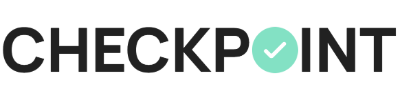
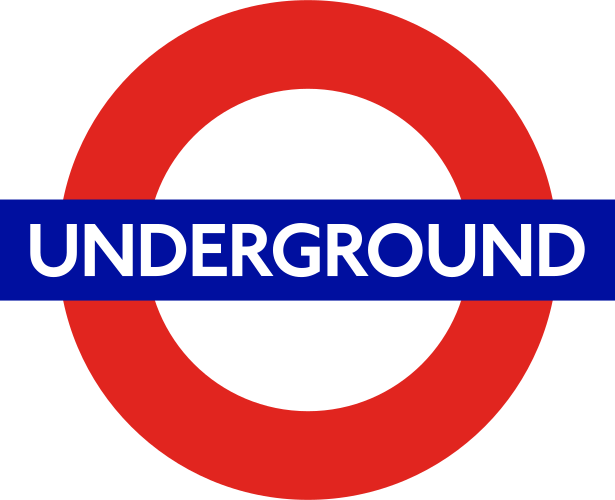
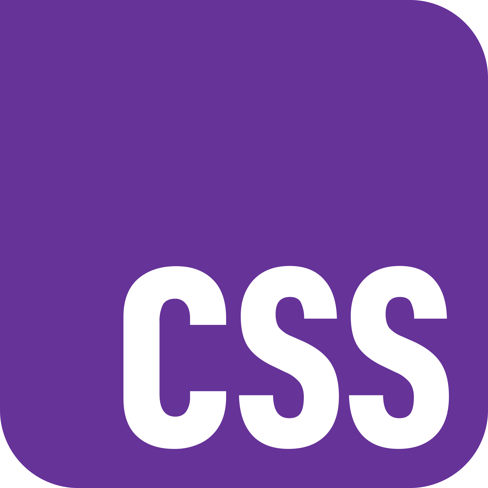

My projects
Checkpoint
A goal tracking web application
Checkpoint is a simple web app for tracking the progress of both long and short term goals. It can be easily customised by the user to allow them to keep track of their life goals in a simple and intuitive way.
Tech stack
 React
React-
 Typescript
Typescript
-
 Express
Express
-
 MongoDB
MongoDB
Tube Quest
A London Underground guessing game
Tube Quest is a game inspired by others such as Wordle, where the user has 5 attempts to guess a randomly selected London Underground tube station each day. Each guess will help narrow down the target station.
Tech stack
 HTML
HTML- CSS
-
 Javascript
Javascript